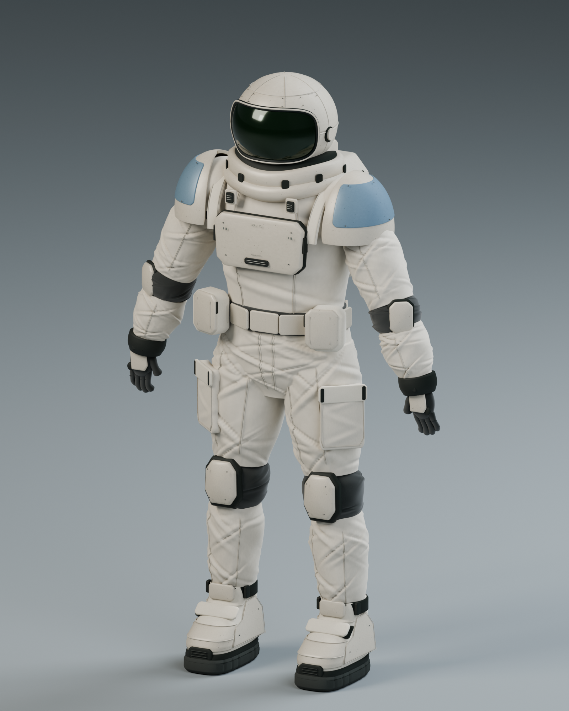

Space Marine (Codex)
Reference-guided Blender surface study, 3–4 October 2026. This is the completed source-cleanup baseline: ivory pressure suit, olive glass shield, steel-blue armour insets and a compact life-support pack. Every character image below is an actual Cycles render of the saved model.

Supplied concept reference. This image is shown for comparison; it is not a model render.
Neutral views
Studio hero

Three-quarter view · neutral studio, no weapon or prop
Construction and elevated view